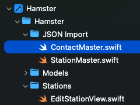

In your QSL enum, in your Stations.swift file, add a new method for converting the string version that you use in the online version to a QSL enum value.
xxxxxxxxxxstatic func convert(_ master: String) -> QSL { switch master { case "Y": .yes case "N": .no case "E": .electronic default: .no }}You need to create temporary Codable structs in your Swift project to match the expected JSON structure for the two json files
I go through this process in this video:
The Basics of JSON Decoding - Swift https://youtu.be/34U5CPpfORs
In your project, create a new Folder and call it JSON Import
Inside that folder create a new Swift file and call it StationMaster.swift
Import Foundation at the top of the file
Create a struct called StationMaster that conforms to Codable
Create the following properties:
xxxxxxxxxximport Foundation
struct StationMaster: Codable { var call_sign: String var name: String var contact_date: String var location: String var notes: String var email: String var qsl: String var phone: String}Inside that same folder, create another Swift file and call it ContactsMaster.swift
import Foundation at the top of the file
Create a struct called ContactsMaster that conforms to Codable
create the following properties:
xxxxxxxxxximport Foundation
struct ContactMaster: Codable { var call_sign: String var cont_date: String}
Just a note as to why I have created the two contact_date properties as stings. This is because the exported JSON files may include a header and in that case the value for the date field will not be a date, but rather then column title so I have to account for that and do a conversion to date from a valid string when I create the new database record for the station and the contact
You will need to create a service class that you can call that will import the JSON and decode it to the StationMaster and ContactsMaster structs as arrays and then use that data to populate your SwiftData database
I have used comments like this
`// 2that refer to the numbers in the steps below to help you understand what I am doing. This is not intended to be in detail because I have many videos that do this kind of thing.
Inside that same folder, create a new Swift file and call ImportService.swift
Import both Foundation and SwiftData at the top
Create Ań enum called ImportService
Create 3 static string properties that represent the rootURL, then name of the station JSON file and the contacts JSON File
Create a static function called. importJSON that is asynchronous, can throw and error and will return a tuple that contains and array of the decode StationMaster objects and an array of the ContactMaster objects
Inside the function, you create the code that will fetch the data from rootURL and decode it. This is what I teach in the json decoding playlist and a number of other video. I have also created a playground and a video that can help you decode JSON, but you need to watch the full JSON Decoding series first before this code will make sense.
JSON Decoding Playground for Swift https://youtu.be/-UUyo3bOlys
This code will return the tuple continuing both arrays and is used in the next function that you create inside that same file
Still inside the ImportService file, create another function called updateDatabase that has a single parameter called context that is an instance of the ModelContext class. We will be passing this in from the view that calls this function
Call the importJSON to get the two arrays and assign to a variable called masterTuple.
This tuple has two arrays in it so we can assign the first (at index 0) to a variable called stationMaster and the second (at index 1) to a variable called contactsMaster
The remainder of the function will do the following::
First delete the entire database
Next, loop through the stationMaster array and create a new Station record and insert it into the database
After a record has been inserted with an empty array for the supplemental contact dates, you can find all of the dates in the contactsMaster array where the call sign matches the call sign of the newly created station and add it to the contact dates array for that record
Once that is done, the context saves which persists the changes to the database
xxxxxxxxxx// 2import Foundationimport SwiftData
// 3enum ImportService { // 4 static var rootURL = "https://wk8g.github.io/Hamster.JSON" static var stationFile = "station.json" static var contactsFile = "contacts.json" // 5 static func importJSON() async throws -> ([StationMaster],[ContactMaster]){ // 6 // Create a jsonDecoder let decoder = JSONDecoder() // First the stations guard let stationsURL = URL(string: rootURL)?.appending(path: stationFile) else { fatalError("Could not find Stations JSON File") } let stationRequest = URLRequest(url: stationsURL) let (stationData, stationResponse) = try await URLSession.shared.data(for: stationRequest) guard let _ = stationResponse as? HTTPURLResponse else { fatalError("Error: Data Request error.") } guard let decodedStations = try? decoder.decode([StationMaster].self, from: stationData) else { fatalError("Failed to decode Station Master data") } // now contacts guard let contactsURL = URL(string: rootURL)?.appending(path: contactsFile) else { fatalError("Could not find Stations JSON File") } let contactsRequest = URLRequest(url: contactsURL) let (contactsData, contactsResponse) = try await URLSession.shared.data(for: contactsRequest) guard let _ = contactsResponse as? HTTPURLResponse else { fatalError("Error: Data Request error.") } guard let decodedContacts = try? decoder.decode([ContactMaster].self, from: contactsData) else { fatalError("Failed to decode Station Master data") } return (decodedStations, decodedContacts) } // 7 static func updateDatabase(context: ModelContext) async { // 8 guard let masterTuple = try? await importJSON() else { fatalError("failed to import the two arrays") } // 9 let stationMaster = masterTuple.0 let contactsMaster = masterTuple.1 // 10 do { // Specify the format for the dates that are in each JSON file let formatter = DateFormatter() formatter.dateFormat = "M/d/yyyy" // 11. Delete the entire database first try context.delete(model: Station.self) // Now recreate the database // 12 for station in stationMaster { // Ignore the header if station.call_sign != "call_sign" { // Decode the stations first let initialDate = formatter.date(from: station.contact_date) ?? Date.distantPast let newStation = Station( callSign: station.call_sign, name: station.name, contactDate: initialDate, location: station.location, notes: station.notes, email: station.email, qsl: QSL.convert(station.qsl), phone: station.phone, contacts: [] // begin with an empty array ) // Make sure it gets inserted into the database context.insert(newStation) // 13 // Now find each of the dates in the contacts master that match the callSign // of this newStation and append them to the array let matchedContacts = contactsMaster.filter { $0.call_sign == station.call_sign} for contact in matchedContacts { let contactDate = formatter.date(from: contact.cont_date) ?? Date.distantPast newStation.contacts.append(contactDate) } } } //14 // Now save the context to make sure the databse persists try context.save() } catch { // Handle errors appropriately in your app; for now, crash for visibility fatalError("Failed during updating database)") } }}
Some of these code updates are things that I notice when I was working on the code and not related to the import functions,
In the changed computed boolean property, remove the OR statement that checks for contacts != station.contacts
xxxxxxxxxxvar changed: Bool { if !viewLoaded { return false } else { return callSign != station.callSign || name != station.name || contDate != station.contactDate || notes != station.notes || email != station.email || Qsl != QSL(rawValue: station.qsl)! || phone != station.phone// || contacts != station.contacts }}In StationList, for the row, you can add an additional Text field that will be displayed if the number of supplemental contacts for a station have been created.
What I do is check first too see if the station.contacts property is not empty which means there are some. If that is the case, we can create a new text view and display the number of additional contacts,
This uses string interpolation along with an inflect property that will change the word contacts to just contact (singular) if there is only 1 contact so for example 1 additional contact and 2 additional contacts
Align the Text view to the trailing edge of the view
xxxxxxxxxxList { ForEach(stations) { station in NavigationLink { EditStationView(station: station) } label: { VStack(alignment: .leading) { Text(station.callSign).font(.title2) Text(station.name).foregroundStyle( .selection) // 1 if !station.contacts.isEmpty { // 2. this will use proper pluralization of the word contact Text("^[\(station.contacts.count) additional contacts](inflect: true)") // 3. Alignt to right .frame(maxWidth: .infinity, alignment: .trailing) } // VStack } // label } // ForEach } .onDelete { indexSet inThis is the view that is displayed when you launch the app. What we want to do is to add a button to the toolbar that will ask you if you want to replace the data with your json and if you confirm, will delete the data in the database and recreate it with the new JSON
At the top of the view, add 3 properties, one to get the context that we have to pass in to our new. Service function, one to initiate the alert to ask if you want to update and a third one that will allow us to display a progress view while the data is being updated.
Since we are going to need another toolbar button, we need to first enclose the existing button in the toolbar modifier in a ToolbarItem struct and set the placement to topBarTrailing
Create an additional ToolBarItem and set the placement to topBarLeading Inside, create a button using the label Import and for the action, just toggle the importAlert property and this will initiate the presentation of the alert.
Add and overlay after the toolbar and inside if the boolean isUpdating is true, display a ProgressView
Below the sheet presentation, create an alert that has two buttons and a message The first button is called Proceed and in the action it will set the isUpdating property to true and then call service's updateDatabase function passing in the context so that it can update the database This is an asynchronous function so while it is doing it's work, the progress view is being displayed. Once it has completed, the data will have been updated so the isUpdating property will be set to false and the progress view will be hidden
xxxxxxxxxximport SwiftDataimport SwiftUI
enum SortOrder: String, Identifiable, CaseIterable { case callSign, name var id: Self { self }}
struct StationListView: View { @State private var createNewStation = false @State private var sortOrder = SortOrder.callSign @State private var filter = "" // 1. New properties @Environment(\.modelContext) private var context @State private var updateAlert = false @State private var isUpdating = false var body: some View { NavigationStack { Picker("", selection: $sortOrder) { ForEach(SortOrder.allCases) { sortorder in Text("Sort by \(sortorder.rawValue)") } } .buttonStyle(.bordered) StationList(sortOrder: sortOrder, filterString: filter) .searchable(text: $filter, placement: .navigationBarDrawer, prompt: Text("Filter on Call Sign or Name")) .navigationTitle("Hamster") .navigationBarTitleDisplayMode(.inline) .toolbar { // 2 ToolbarItem(placement: .topBarTrailing) { Button { createNewStation = true } label: { Image(systemName: "plus.circle.fill") .imageScale(.large) // label } } // 3 new button ToolbarItem(placement: .topBarLeading) { Button("Import") { updateAlert.toggle() } .buttonStyle(.glassProminent) } // .toolbar } // 4. Display Progress View .overlay { if isUpdating { ProgressView() } } .sheet(isPresented: $createNewStation) { NewStationView() // Stewart said to delete this // .presentationDetents([.medium]) // .sheet } // 5. .alert("Update database", isPresented: $updateAlert) { // Action Button Button("Proceed") { Task { isUpdating = true await ImportService.updateDatabase(context: context) isUpdating = false } } // Cancel Button Button("Cancel", role: .cancel) { // do nothing } } message: { Text("Are you sure you want to delete the database and refresh it from JSON?") } // NavigationStack } // body View } // View}
#Preview(traits: .mockData) { StationListView()